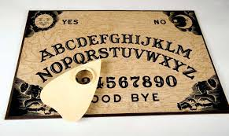
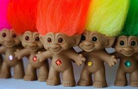

Ouija Board
One of the have-to activities at a sleepover. There was always a spirit nearby and willing to chat to little girls typically about murder and such freely. Oh and of course no one was ever moving it.
Trolls
If the world of the spirits were too much for you that is ok. You can always rub the tummy of a creepy little wrinkly doll and make wishes. WIshed of course always came true if you believed with all your heart.
Magic 8 ball

If waiting for wishes and for spirits to reach out was not quick enough for you, there was always the trsuty magic 8 ball. Quickly and easily get all you burning questions about the universe answered if they were in a yes/no format that is. Which really leaves no room for bias.